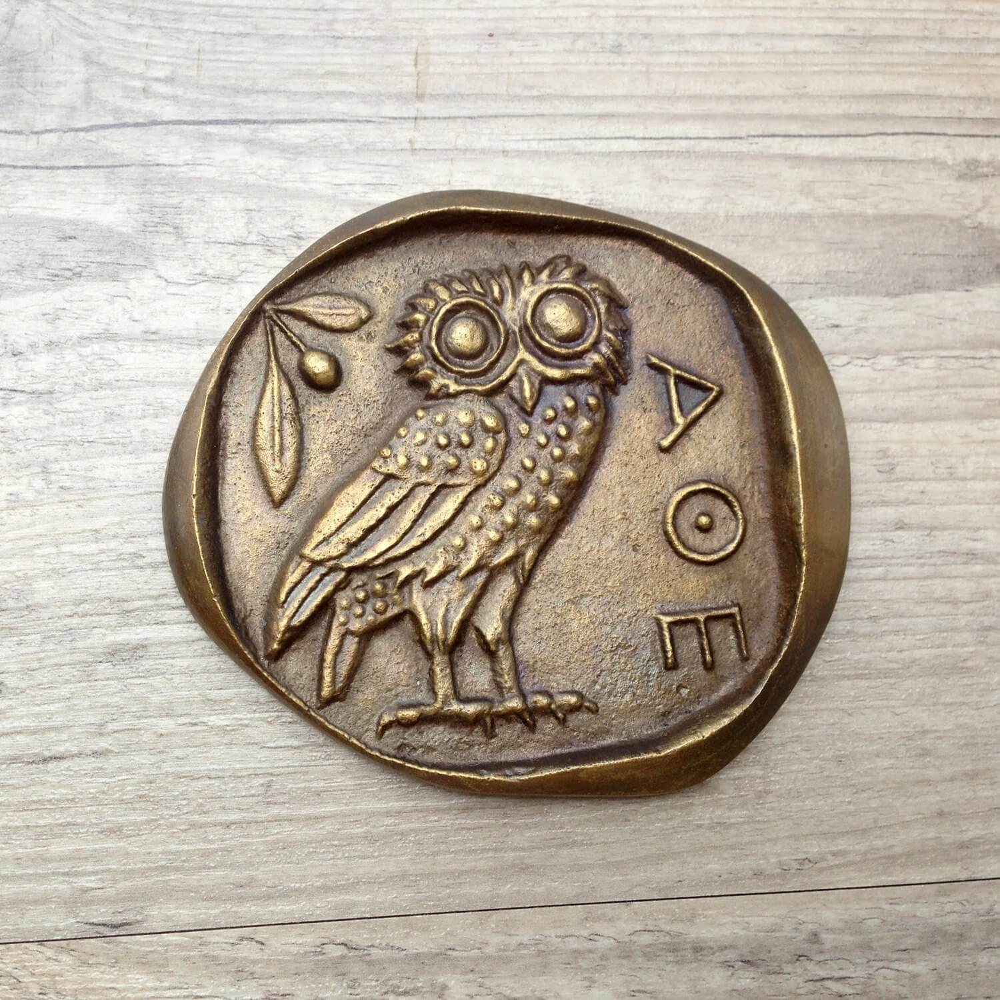

chapter3.2--handout
Background Information
Gothic architecture(哥特式建筑)
我们怀着希望推开一扇很神气的门，走进了一间高高的哥特式图书室（On a chance we tried an important-looking door, and walked into a high Gothic library.)
哥特式建筑（Gothic architecture）是11世纪下半叶起源于法国，13-15世纪流行于欧洲的一种建筑风格。主要见于天主教堂（Catholic Church），也影响到世俗建筑，如文中提到的哥特式图书室。
哥特式建筑最大特色，在于伸向无际苍穹的塔尖及无数承担屋顶重量的尖拱形高窗，强调与地面的垂直线效果重于地面上的安定感，为了强化此种垂直线的效果，哥德式建筑扬弃了罗马式建筑（Romanesque architecture）的厚重墙壁，转而大量运用筋骨穹窿（rib vault）、尖拱形窗户、飞梁及扶壁（flying buttress）等技术，使得哥德式建筑出现了大量的锐角组合，因而建构出轻快、灵巧与上升的力道，从而创造出哥特式建筑特有的动感与旋律，外观异常华丽优美。
此外，哥特式建筑的另一重要特色为使用了大量的彩绘玻璃（stained glass），外在光线透过哥特式建筑的尖拱形高窗进入建物内部后，呈现出柔和的色彩，并可照射至建筑物内部的每一角落，唤起了色调的神秘颤动，于是，哥特式建筑高大的内部空间不禁令人顿生“神之家”的幻想，颇有抽象之神秘主义风味。
Owl (猫头鹰)
一个矮矮胖胖的中年男人，戴着老大的一副猫头鹰式眼镜，正醉醺醺地坐在一张大桌子的边上（A stout, middle-aged man, with enormous owl-eyed spectacles, was sitting somewhat drunk on the edge of a great table）.
猫头鹰是条纹目鸟类（order Strigiformes）中的一种，包括大约200种主要是独居和夜间活动的猛禽，它们的特征是直立的姿态、宽大的脑袋、双目视觉（binocular vision）、双耳听觉（binaural hearing）、锋利的爪子和能适应无声飞行的羽毛。
现代西方通常把猫头鹰与智慧（wisdom）和警觉（vigilance）联系在一起。这种联系至少可以追溯到古希腊，当时雅典以艺术和学术（scholarship）著称，雅典娜（Athena）——雅典的守护神和智慧女神，以猫头鹰为象征。人类学家金普塔斯（Marija Gimbutas）追溯至古老的欧洲文化，早在印欧文化（Indo-European）之前，人们就将猫头鹰作为一种神来崇拜。

Vocabulary
bona-fide
adj. 真心诚意的；真实的；真正的（genuine or real）
原文：It’s a bona-fide piece of printed matter.
这是一本地地道道的印刷品。
💧bona-fide 来自于拉丁文，表示in good faith（值得信赖的，信誉良好的）。在商业和法律中，主要是指“无欺诈的”（no fraud or deception）；在日常生活中则是指“真诚的”（sincere），比如a bona-fide proposal就是“真心诚意的求婚（绝非儿戏）”。
💧这里bona-fide强调这些书都是真的（genuine）.
confidentially
adv. 秘密地；亲密地（in an intimate and secret manner）
原文：The two girls and Jordan leaned together confidentially. 两个姑娘和乔丹诡秘地把头靠到一起。
💧我们在之前介绍过confidence可以表示“秘密”的意思，而confidential就是指“机密的；（言谈举止）神秘的”，副词形式含义同样。比如：Confidentially, I am not sure that it wasn't above their heads.
私下里说，我不确定这没有超出他们的理解。
Crush Your Problems
- It was testimony to the romantic speculation he inspired / that there were whispers about him / from those who found little / that it was necessary to whisper about / in this world.
有些人早就认为这个世界上没有什么需要避讳的事情，现在谈起他来却这样窃窃私语，这一点也足以证明他引起了人们何等浪漫的遐想了。
💧句式拆解
①It was testimony to...that... 是这个句子的主干，It作形式主语，that后面的部分是真正的主语；A is (a/the) testimony to B这个结构表达的意思就是“A是B的证明”；
②the romantic speculation he inspired 包含了一个定语从句：(that) he inspired, 也就是“他引起的浪漫遐想”；
③those who found little that it was necessary to whisper about in this world 里面嵌套了两个定语从句：who found little...修饰those; that it was necessary to...修饰little（little在这里作名词，表示a small quantity或者是practically nothing, “极少量，几乎没有”）。
我们可以把这个句子里面省略的成分补上来帮助理解：those who found (there is) little that it was necessary to whisper about in this world. - There were three married couples / and Jordan’s escort, a persistent undergraduate / given to violent innuendo, / and obviously under the impression / that sooner or later / Jordan was going to yield him up her person / to a greater or lesser degree.
一共有三对夫妇，外加一个陪同乔丹来的男大学生，这个人死乞白赖的，说起话来老是旁敲侧击，并且显然认为乔丹早晚会或多或少委身于他的。
💧表达精讲
①escort 指“陪同参加社交活动的伴”，Jordan's escort也就是Jordan带来的男伴；
②persistent 表示“坚持不懈的，执着的”，在这里带有贬义，指“死乞白赖的”；
③given to violent innuendo 是过去分词短语作后置定语，given to表示“习惯于，倾向于”，innuendo 指“暗示，含沙射影”；violent 表示 “（程度）重的”，可以理解为不知分寸、粗暴无礼的；所以这里的意思就是“（这个男大学生）说话经常用是一种近乎无礼的含沙射影”；
④be under the impression (that) 表示“误以为”（to believe sth is true when it is not）;
⑤yield him up her person 也就是yield up her person to him, “把自己交付给他”。 - Instead of rambling, / this party had preserved a dignified homogeneity, / and assumed to itself / the function of representing the staid nobility of the country-side — / East Egg condescending to West Egg, / and carefully on guard / against its spectroscopic gayety.
这伙人不到处转悠，而是正襟危坐，自成一体，并且俨然自封为庄重的农村贵族的代表——东卵人向西卵人屈尊俯就，而又小心翼翼提防西卵那灯红酒绿的欢乐。
💧句式拆解
这个句子的主语是this party, 也就是和Jordan同桌的这些东卵人（上文：...and Jordan invited me to join her own party, who were spread around a table on the other side of the garden）.
注意party在这里不是理解为派对哦~并且下文的itself也是看指代这群人（作为整体看待，所以用了第三人称代词）。
💧表达精讲
①ramble 本义是“胡言乱语，到处闲逛”，这里是说这桌人并不像其他人那样在聚会上放浪形骸；
②preserve a dignified homogeneity 可以直译为“维持一种统一的高贵尊严”；homogeneity是homogeneous的名词形式，表示“同质性”；所以这句话的意思就是“每个人都是一副正襟危坐的样子”。
③assume 表示“承担责任”，后面直接加宾语（这里的to是为了引入itself表示“给自己”，代指上文的this party），也就是the function of representing the staid nobility of the country-side.
④function 在这里是“职责”（perform/fulfill a funciton “履行职责”）；represent the staid nobility of the country-side 直译就是“表现出乡绅贵族的那种古板严肃的崇高感”（译文的“俨然自封为庄重的农村贵族的代表”是一样的意思）；
⑤condecend to “表现出高人一等”；这里East Egg condescending to West Egg也就是指“东卵人对西卵人屈尊俯就”； East Egg和West Egg分别表示“东卵人”和“西卵人”属于我们前面提到的转喻（Metonymy）哦~
⑥and carefully on guard against its spectroscopic gayety, on guard against也就是“提防”；its即West Egg's; spectroscopic gayety, spectroscopic表示“光谱学的；分光镜的” ，gayety表示“欢乐”，直译是“五颜六色/多姿多彩的欢乐”（译文的“灯红酒绿”也用得非常妙哦~）
*这一段话都是对东卵人自恃高人一等的贵族气的讽刺。 - The moon had risen higher, / and floating in the Sound / was a triangle of silver scales, / trembling a little / to the stiff, tinny drip of the banjoes / on the lawn.
月亮升得更高了，海湾里飘着一副三角形的银色天秤，随着草坪上班卓琴铿锵的琴声微微颤动。
💧句式拆解
① floating in the Sound was a triangle of silver scales 是倒装句，还原为正常语序就是：a triangle of silver scales was floating in the Sound.
②trembling a little...非谓语结构的主语是a triangle of silver scales.
💧表达精讲
①a triangle of silver scales 并不是真的指海面上有一副三角形的银色天秤（scales作为复数形式可表示“磅秤”），在这里可以解释为：对于岸上的人来说，月亮倒映在海面上的光辉形状近似三角形，如下图：
② trembling a little to the stiff, tinny drip of the banjoes on the lawn, “随着草坪上班卓琴铿锵的琴声微微颤动”，海面当然不会随着琴声颤动（可能是风拂过海面而显出波澜）。
这里把“形”和“声”联系在了一起，有一点像中文里的“通感”手法，比如朱自清的《荷塘月色》里有这么一句： 微风过处，送来缕缕清香，仿佛远处高楼上渺茫的歌声似的。（“清香”比作“歌声”）。 - We were sitting at a table / with a man of about my age / and a rowdy little girl, / who gave way / upon the slightest provocation / to uncontrollable laughter.
我们坐的一张桌上还有一位跟我年纪差不多的男子和一个吵吵闹闹的小姑娘，她动不动就忍不住要放声大笑。
💧表达精讲
①give way to 表示“让步于，屈服于”，这里指小姑娘毫不约束自己的行为举止；
②upon the slightest provocation “无论多轻微的触发”（也就是“动不动就”）；upon相当于on, 在这里表示原因；the slightest“最轻微的”；provocation是“激发，触发”。
Content Analysis
今天的内容中，Nick先后听到了各种关于Gatsby过往的传闻：有人说他曾经参加过战争（"he was in the American army during the war"），还杀过人（"he killed a man once"）；也有人说他做过德国人的间谍（"he was a German spy during the war"）；并且还在图书馆遇到了一个身份不明的醉酒男子；最后就当他以为自己和一个也是同住附近的人搭上话的时候，才发现那个人就是Gatsby. 这些情节里埋伏了很多关于Gatsby本人的线索，我们一起来看一看~
💧Clue 1: Gatsby is intended to build the romantic speculations about himself.
虽然关于Gatsby的流言蜚语暂时无从考证，但令人匪夷所思的另一点是，Gatsby不可能对这些毫无听闻。因为聚会上几乎没有人认识他，而他自己就趁此潜伏在人群之中（比如Nick跟他同桌交谈的时候甚至都不知道他就是Gatsby）。所以很有可能Gatsby是有意塑造一个神秘并且足够引起人们浮想联翩的形象。
Evidence 1: It was testimony to the romantic speculation he inspired that there were whispers about him...
这一点也足以证明他引起了人们何等浪漫的遐想了……
the romantic speculation he inpired指Gatsby所引起的不着边际的浮想联翩。在Chapter 1.1里也出现了romantic readiness, 可以理解为willingness to be romantic. 我们在之前的分析中解释为Gatsby是一个浪漫/理想主义者，时刻都为了实现梦想做着准备。那么结合这里romantic的含义，romantic readiness的另一种解释就是，Gatsby毫不避讳让别人随意谈论他（无论善意或恶意），他乐意让人们对他产生各种遐想。
💧Clue 2: What Gatsby tries to create is only partly realistic.
为什么说Gatsby努力构造的一切都不是完全真实的呢？这里需要解释一下文中隐藏的一个暗喻，来自Nick和Jordan在图书馆里遇到的那个醉鬼说的一段话——
Evidence 1: “See!” he cried triumphantly. “It’s a bona-fide piece of printed matter. It fooled me. This fella’s a regular Belasco. It’s a triumph. What thoroughness! What realism! Knew when to stop, too — didn’t cut the pages. But what do you want? What do you expect?”
"瞧！"他得意洋洋地嚷道，"这是一本地地道道的印刷品。它真把我蒙住了。这家伙简直是个贝拉斯科。真是巧夺天工。多么一丝不苟！多么逼真！而且知道见好就收——并没裁开纸页。你还要怎样？你还指望什么？"
他似乎很拼命地想要证明这些书都是“真”的，而不是像我们平时看到的作为摆设但没有书页的那种。This fella's a regular Belasco是在说Gatsby是个十足的Belasco（贝拉斯科）一样的人物（regular在这里表示“十足的，完全的”，相当于complete）.
Belasco是美国的一位剧作家，以现实主义风格著称。而现实主义戏剧（Realistic Theatre）注重的就是在舞台上客观地、精细地再现生活。
What thoroughness! What realism! 就是在强调Gatsby把这个图书馆布置地多么逼真，但他又懂得适可而止，因为这些书页是没有裁开的，也就是实际没办法打开来看。
而Gatsby在派对上所塑造的这种虚浮繁华的表象，也是一种现实主义的模仿。一如他努力构造的梦想——跻身上流社会，重新赢得Daisy……但这一切终将迎来破灭。
Today's Bonus
💧Which Glass For Which Drink? 喝什么酒用什么杯
香摈一杯杯地端出来，杯子比洗手指用的小碗还要大（champagne was served in glasses bigger than finger-bowls）.
洗手盅是一碗水，用于西餐在正式的多道菜餐之间清洗手指。它通常在餐前与餐盘一起上桌，餐盘和碗之间放一个亚麻桌巾，通常有花瓣，柠檬片，薄荷枝或其他装饰漂在洗手盅里。
为了体现自己的富庶，盖茨比把香槟装在很大的杯子里，也体现了他是个不太“专业”的上层人士。这里帮他科普一下吧，宴会上的不同的酒一般都用不同杯子来盛：
- 细长酒杯 Flute Glass
起泡酒（sparkling wine）需要更小的杯口，有助于保护气泡，防止过快消失。因此，香槟酒用又高又薄和小杯口的细长酒杯来盛。细长酒杯也适用于普罗塞克（Prosecco），贝里尼（Bellini）.
- 红葡萄酒杯 Red Wine Glass
红葡萄酒杯最好有一个更大、更圆的杯口，以便葡萄酒旋转接触空气来“醒酒”。高脚会使手远离酒，以防止它变得太热而影响口感。
- 白葡萄酒杯 White Wine Glass
白葡萄酒的酒杯会有一个较小的杯口，有较小的表面积来接触空气，这样葡萄酒就不会氧化得太快。这是为了保留白葡萄酒的更淡、更精致的味道。
- 鸡尾酒杯 Cocktail Glass
经典的、传统的鸡尾酒杯是倒锥形酒杯，大小不一，容积一般在3到6盎司（ounces）左右。用来盛不加冰的鸡尾酒。杯子的形状是从所有传统鸡尾酒都有有趣的香气这一事实演变而来的，大敞口方便人们充分品味酒的香气和味道。比如，马提尼（Martini）就用倒锥形酒杯来盛。
- 玛格丽特杯 Margarita Glass
玛格丽特酒是一种特色饮品，配有独特的玻璃酒器，传统上是盛在玛格丽塔酒杯中，一种鸡尾酒杯的“分步直径变异型”（stepped-diameter variant）. 而现在，从品脱玻璃杯到双层老式玻璃杯，用许多其他容器盛玛格丽特酒已经成为一种常态。
大家在drinking age点酒的时候，就可以大概从酒杯判断酒吧“专不专业”了哦~你还见过哪些有趣的酒杯呢？